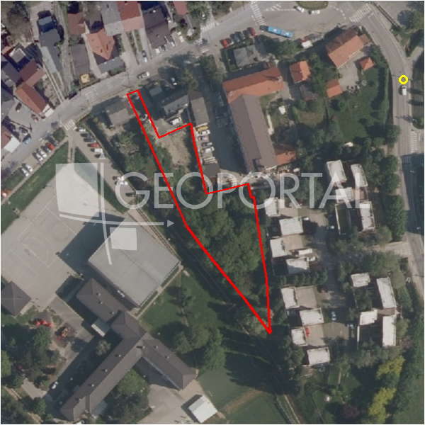

#10217 · Zagreb, Markuševec, građevinsko zemljište 1800 m²
Markuševec, Podsljeme, Grad Zagreb · zemljiste · njuskalo · status active · oglas ↗
Ocjena
- Score
- 64 rule 64 · LLM – · 12.09.2026.
- RLV
- 829.000 € (459 €/m²) · ratio 9,76
- Ukupna investicija
- 5,62 M€
- GBP
- 2.709 m²
- Feedback
- –
- CRM
- –
Oglas
- Cijena
- 85.000 € (47 €/m²)
- Površina
- 1.806 m² · DKP 2.144 m² (odstupanje 18,7 %)
- Prodavatelj
- agencija · Eurovilla d.o.o.
- Prvi put
- 11.09.2026. · zadnje 11.09.2026. · 0 d na tržištu
Povijest cijene
| Datum | Cijena |
|---|---|
| 11.09.2026. | 85.000 € |
Flagovi
area_mismatch DKP površina odstupa > 15 % (−5)zone_uncertainty zona nije pregledana (reviewed: false) (−5)
llm_pending LLM ekstrakcija/ocjena nedostupna
Komponente score-a
| rlv | {'gbp': 2709.0, 'kis': 1.5, 'nkp': 2221.3799999999997, 'noi': None, 'rlv': 829196.6321739121, 'ratio': 9.755254496163673, 'value': None, 'phases': 1, 'profile': 'zagreb_visestambeno', 'gdv_neto': 7641547.199999998, 'cost_soft': 178794.0, 'gdv_bruto': 9551933.999999998, 'kis_known': True, 'total_inv': 5619169.0, 'cost_build': 4469850.0, 'cost_other': 880425.0, 'cost_sales': 286558.01999999996, 'demolition': False, 'gbp_source': 'kis', 'rlv_per_m2': 459.13434782608647, 'parcel_area': 1806.0, 'parcelation': False, 'roi_on_cost': 0.3089104776880707, 'profit_at_ask': 1735820.1799999983, 'cost_demolition': 0.0, 'total_inv_phase': 5619169.0, 'parcel_area_effective': 1806.0, 'sale_price_per_m2_nkp': 4300.0} |
| hard | [] |
| info | ['llm_pending'] |
| rubric | {'permits': {'max': 5.0, 'detail': {'permit': 'none'}, 'points': 0.0}, 'location': {'max': 15.0, 'detail': {'source': 'benchmark:seed:Podsljeme', 'sale_price_per_m2_nkp': 4300.0}, 'points': 5.62}, 'physical': {'max': 4.0, 'detail': {'slope_pct': 3.83, 'road_access': 'yes', 'slope_points': 2.0}, 'points': 4.0}, 'liquidity': {'max': 3.0, 'detail': {'n_cuts': 0, 'points_cut': 0.0, 'points_days': 0.008333333333333333, 'seller_type': 'agencija', 'points_fresh': 0.5, 'price_cut_pct': None, 'days_on_market': 1, 'points_private': 0}, 'points': 0.51}, 'rlv_ratio': {'max': 25.0, 'detail': {'rlv': 829197, 'ratio': 9.755, 'asking_price': 85000.0}, 'points': 25.0}, 'ticket_fit': {'max': 10.0, 'detail': {'asking_price': 85000.0}, 'points': 3.13}, 'zone_quality': {'max': 8.0, 'detail': {'no_upu': True, 'source': 'gis', 'zone_class': 'mjesovito_pretezito_stambeno', 'zone_ideal': True, 'gp_uredjeni': True}, 'points': 6.0}, 'profit_potential': {'max': 20.0, 'detail': {'roi_on_cost': 0.309, 'profit_at_ask': 1735820}, 'points': 20.0}, 'price_vs_benchmark': {'max': 10.0, 'detail': {'source': 'auto:Podsljeme', 'deviation': 0.706, 'ask_eur_m2': 47, 'benchmark_eur_m2': 160.0}, 'points': 10.0}} |
| weights | {'llm': 0.4, 'rule': 0.6, 'model': 0.0} |
| penalties | {'area_mismatch': 5, 'zone_uncertainty': 5} |
| raw_score | 74,3 |
| rlv_notes | ['DKP površina odstupa 19 % → koristi se oglašena'] |
| flag_notes | {'max_gbp': 2709, 'total_inv': 5619169, 'zone_code': 'M1', 'zone_class': 'mjesovito_pretezito_stambeno', 'zone_source': 'gis', 'zone_reviewed': False, 'commercial_pct': 0.0, 'area_mismatch_pct': 18.71, 'commercial_source': 'zone_rule'} |
| caps_applied | [] |
GIS
- Čestica
- k.o. 335347, k.č. 10769/2 (pin_buffer, 0,76); k.o. 335347, k.č. 10758/1 (pin_buffer, 0,75); k.o. 335347, k.č. 10747/1 (pin_buffer, 0,74)
- Zona
- M1 (mjesovito_pretezito_stambeno) · NIJE pregledana
- kig / kis / katnost
- 0,40 / 1,50 / Po+P+3+Pk
- GP / UPU
- uredjeni · UPU ne
- Pristup / nagib
- yes · 3,8 % (max 8,1 %)
- More
- –
- Zaštite
- Natura ne · zaštićeno ne · kulturno dobro ne
- Zgrade na čestici
- 0 %
- Match
- 0,76
Karta
Ortofoto (DOF)

RLV kalkulacija — pretpostavke
| gbp | {'value': 2709.0, 'source': 'kis'} |
| kis | {'value': 1.5, 'source': 'gis'} |
| soft_pct | {'value': 0.04, 'source': 'profil'} |
| nkp_ratio | {'value': 0.82, 'source': 'profil'} |
| cost_other | {'value': 880425.0, 'source': 'profil: doprinosi+uređenje po m² GBP, financiranje+rezerva % gradnje'} |
| parcel_area | {'value': 1806.0, 'source': 'oglas'} |
| asking_price | {'value': 85000.0, 'source': 'oglas'} |
| margin_on_cost | {'value': 0.15, 'source': 'profil'} |
| build_cost_per_m2_gbp | {'value': 1650.0, 'source': 'profil'} |
| sale_price_per_m2_nkp | {'value': 4300.0, 'source': 'benchmark:seed:Podsljeme'} |
| transfer_tax_and_acquisition | {'value': 0.06, 'source': 'profil'} |
Ekstrakcija iz oglasa
| utilities | ['telekomunikacije'] |
| zone_claim | S |
| slope_mention | nagib |
Opis oglasa
Zagreb, Markuševec, prodaje se građevinsko zemljište od 1800 m2 u građevinskoj zoni, sa lijepim pogledom na krajolik. Pravokutnog je oblika, sa padinom na kojoj je predviđena kaskadna gradnja. Prednja fronta je 30 metara, duljina je 60 m2. Zemljište se nalazi u zoni stambene namjene, urbana pravila 2.1. Najmanja površina građevne čestice je 800 m2, najveća izgrađenost građevne čestice je 20%, izgradivost je 400 m2. Najveća visina je dvije nadzemne etaže, pri čemu se druga etaža oblikuje kao potkrovlje ili uvučeni kat, najmanje 2 parkirna mjesta po stanu. Mogućnost gradnje 2 objekta. Lokacija zemljišta je kilometar udaljenosti od centra Markuševca te ima prekrasan pogled. Nalazi se sjeverno od naselja. Vlasništvo uredno. Za ostala pitanja stojimo Vam na raspolaganju. Za ovu nekretninu kontaktirajte agenta na broj telefona +38598484595. Više na Eurovilla.hr, ID: 737058. Direktan link: https://eurovilla.hr/nekretnina/zagreb-markusevec-gradevinsko-zemljiste-1800-m2/737058/.